Downtown Vancouver
Exploring downtown Vancouver along West Hastings Street, framed by the landmark copper clock tower of the historic Sinclair Centre and modern high-rises under clear Pacific skies.
Extracurricular / Travels
Moments, alpine expeditions, and Pacific Northwest travels across Canada during my research internship: from the historic streetscapes of downtown Vancouver, to the turquoise glacial waters of Lake Louise and Lake Minnewanka, the alpine townsite of Banff, the mountain highway from Banff to Jasper, the summit ridge of the East End of Rundle, and the downtown Calgary skyline.
Historic streetscapes, architecture, and urban energy across Vancouver, Calgary, and Banff townsite.
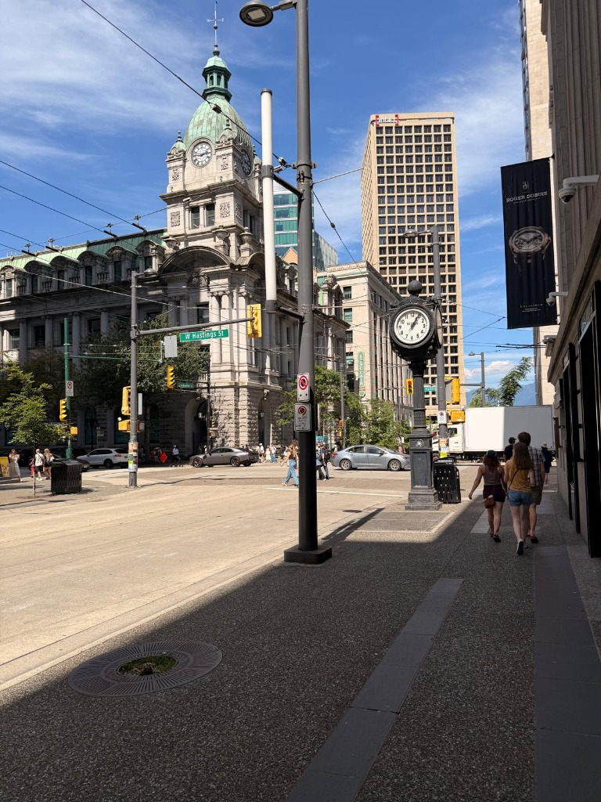
Exploring downtown Vancouver along West Hastings Street, framed by the landmark copper clock tower of the historic Sinclair Centre and modern high-rises under clear Pacific skies.
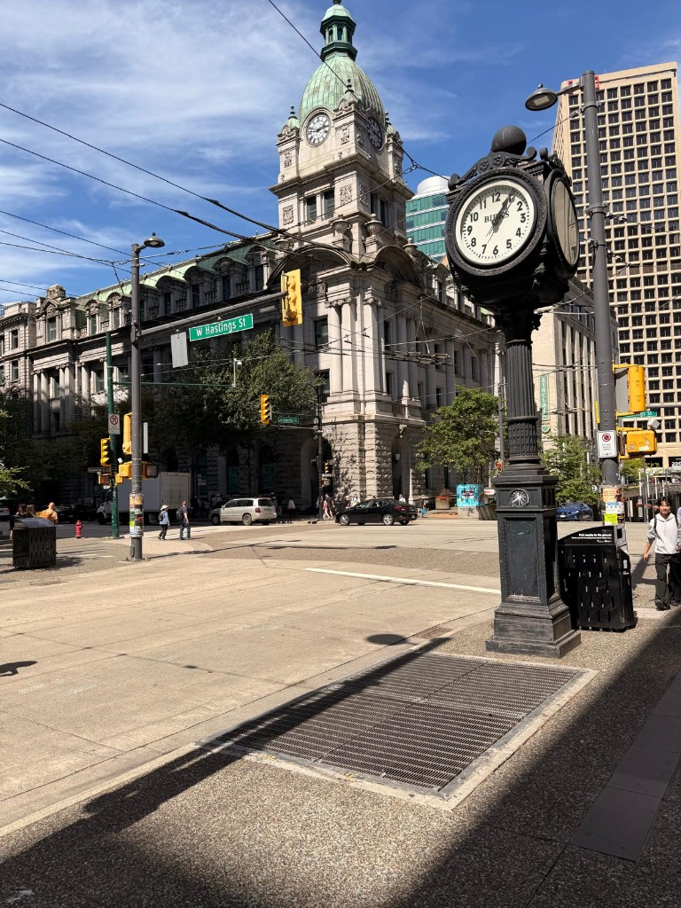
The ornate, freestanding Birks heritage street clock standing proudly at the corner of West Hastings and Granville, capturing the blend of historic Edwardian architecture and vibrant urban pace in Vancouver's core.
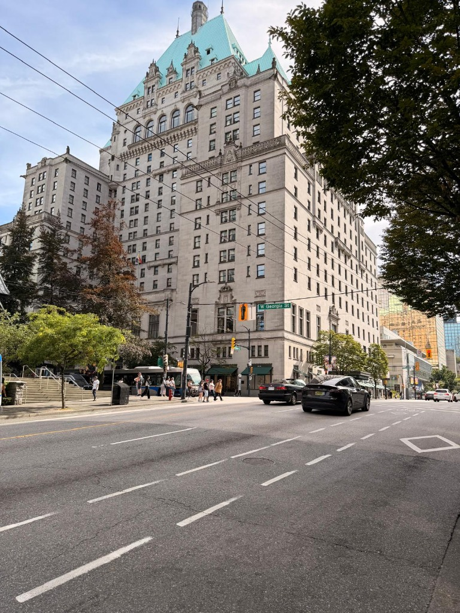
Looking up at the grand chateau-style facade and copper-green pitched roof of the iconic Fairmont Hotel Vancouver along West Georgia Street, one of Canada's legendary grand railway hotels.
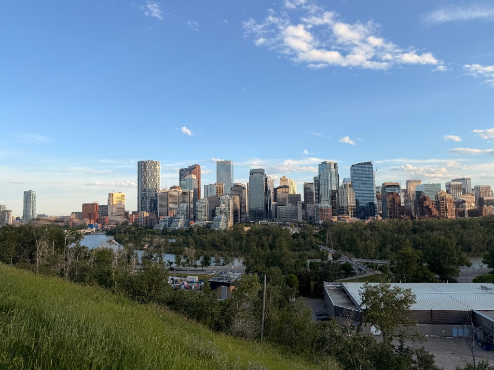
The modern architectural skyline of downtown Calgary viewed from the green bluff ridges across the Bow River, capturing the vibrant urban energy of Alberta's tech and financial hub under open prairie skies.
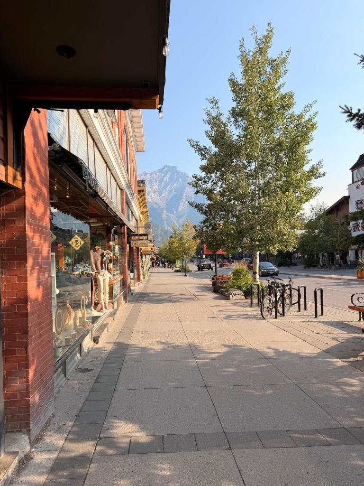
Walking into Banff city center on a crisp, quiet morning to grab breakfast after a night of camping in the Rockies. Warm morning sunlight illuminates the brick storefronts and tree-lined sidewalks with mountain peaks rising quietly in the background.
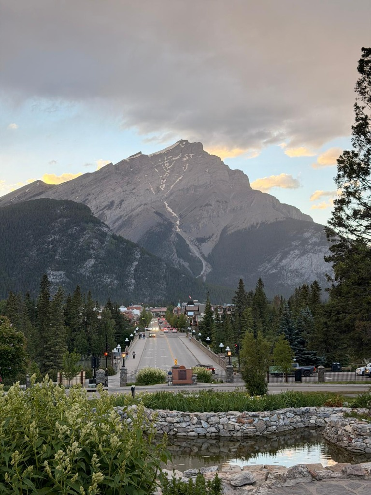
The town of Banff looking directly down Banff Avenue from the landscaped ponds of the Cascade Gardens, where the colossal limestone summit of Cascade Mountain towers over the valley streetscape.
Glacial lakes, mountain passes, backcountry highway road trips, and summit ridges across the Canadian Rockies.
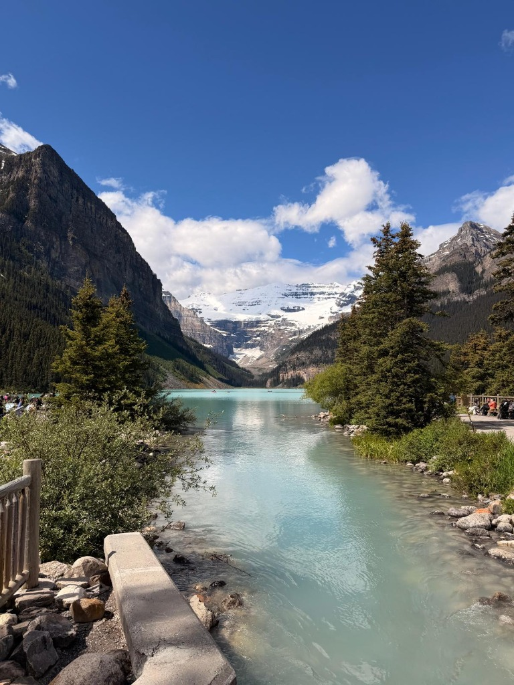
Shoreline perspective along the edge of Lake Louise, where glacier-fed waters take on their signature vivid turquoise hue. Framed by subalpine spruce and fir forests with Mount Victoria and Victoria Glacier rising in the distance.
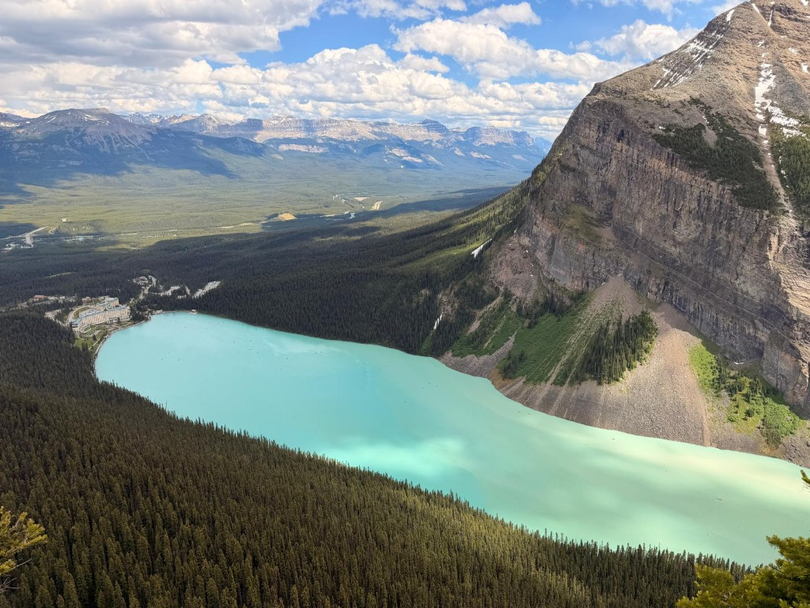
High-elevation mountain overlook above Lake Louise, revealing the immense scale of the glacial basin, the turquoise water, the Fairmont Chateau, and the vast Canadian Rockies expanding toward the Bow Valley horizon.
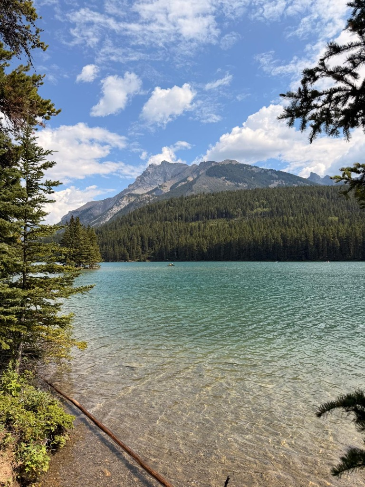
Serene turquoise glacial waters and rocky shoreline along Lake Minnewanka, the largest lake in Banff National Park. Framed by evergreen conifers with dramatic alpine peaks rising beneath summer clouds.
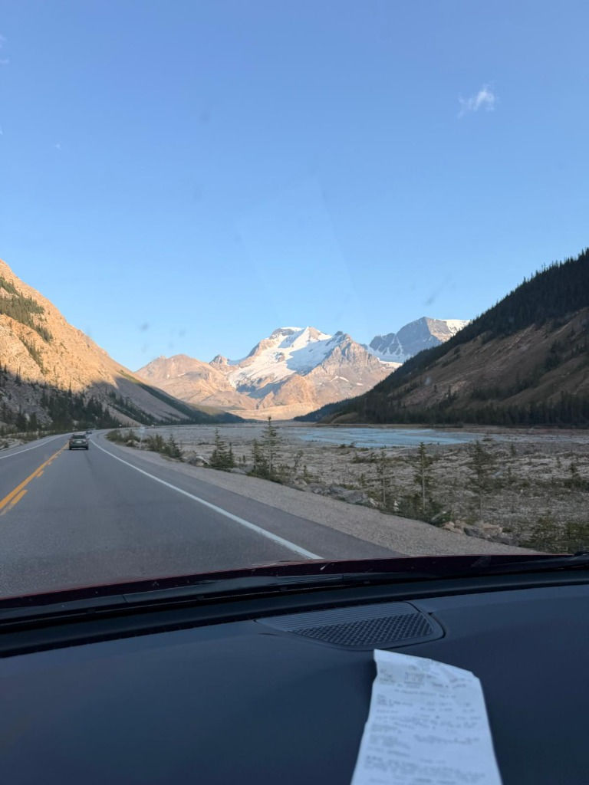
Driving along Highway 93 North on the road from Banff to Jasper National Park. A breathtaking glacial river valley opens up ahead with braided turquoise streams and massive snow-crested mountain peaks rising in the summer sun.
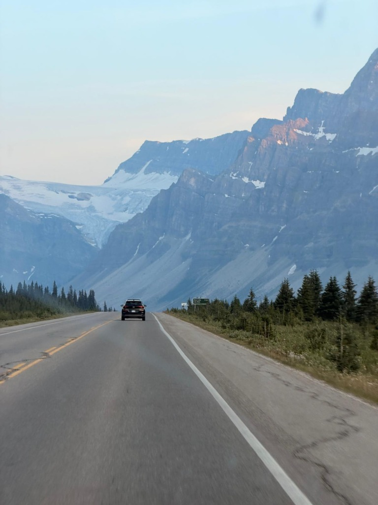
Cruising beneath towering, sheer limestone rock walls and high hanging glaciers along the road to Jasper National Park. Widely celebrated as one of the most stunning alpine highway journeys in the world.
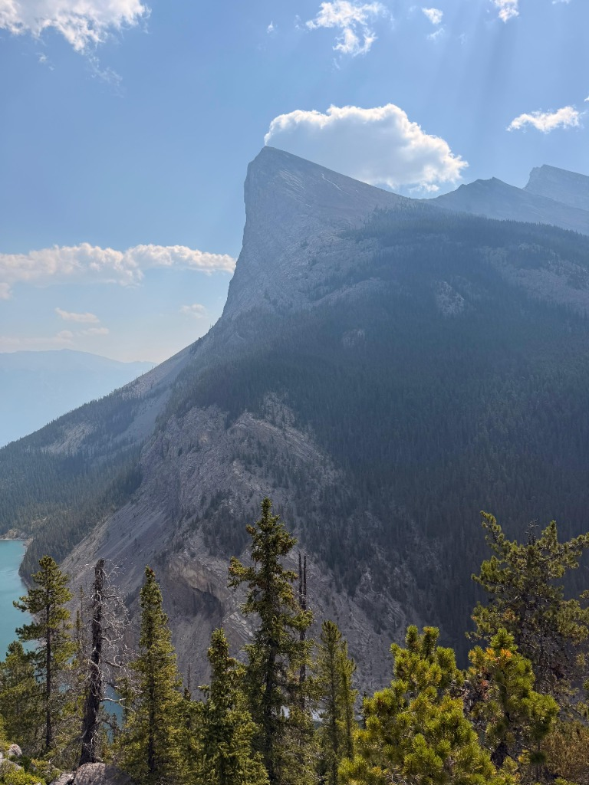
Standing along the steep East End of Rundle (EEOR) summit trail above Canmore, taking in the dramatic sheer rock face of Ha Ling Peak rising directly across the pass and the turquoise waters of Whitemans Pond far below.